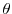

This command docks a structure of a protein/domain (probe) into a given EM density map. See original paper for the description of the method and the most recommended protocols [Topf et al., 2005].
The probe is specified by the variable em_pdb_name. Before starting the protocol, the probe is positioned on the EM density grid based on the start_type variable:
The best fit between the probe and the EM density map is obtained by changing the position of the model so as to maximize the cross-correlation between the probe density and the EM density. See density.read() for the density fitting procedure, controlled by the density_type variable.
The optimization of the cross-correlation score is performed by a 6D search of the probe on the EM grid, based on the variable translate_type. If 'NONE' is specified, only a rotational search over the three rotational Euler angles (,  ,
) is performed, with no translations. angular_step_size gives the maximal step size of searching for all combinations of Euler angles, which is recommended to be 30 degrees. The best fit from this coarse search is refined by a finer local search in all three Euler angles. For a protein of 150 residues this calculation typically takes less than 0.5 minutes on a 3.0 GHz Intel Xeon processor.
If translate_type is 'RANDOM', a Monte Carlo (MC) optimization is performed, and the number of MC steps has to be specified (by number_of_steps). A single MC step consists of (i) a random translation of the probe for one voxel on the EM grid, (ii) a search for the three Euler angles that maximize cross-correlation score, and (iii) an application of the Metropolis criterion [Metropolis et al., 1953]. The temperature used for the Metropolis criterion is specified in temperature (typically about 5000 units). This calculation typically takes about 1-2 minutes.
When translate_type is 'EXHAUSTIVE', a local search is performed with the probe on the grid. The optimal orientations at its original position and all 26 (i.e., 3x3x3 - 1) neighboring grid points are obtained successively by enumerating all three Euler angles. A Monte Carlo criterion is applied to each one of these 27 optimal orientations (usually with temperature lower than 5000, but this number has to be adjusted according to the optimization). number_of_steps gives the number of steps for which this process is repeated (typically 25 times). When the EM density map covers only the probe model and start_type is either 'CENTER' or 'SPECIFIC', this protocol can be used for a translational and rotational refinement of the initial placement of the model on the grid. When start_type is 'ENTIRE' this protocol will be applied for a local search only in those cells where the randomly oriented probe gives a positive cross-correlation score. The calculation typically takes about 10-15 minutes.
best_docked_models specifies how many best-fitted models should be saved by the program. This becomes more important at decreasing resolutions, as the best solution will not necessarily have the highest cross-correlation score.
em_fit_output_file names an output file which will be used to record the progress of the optimization.
from modeller import *
log.verbose()
env = environ()
den = density(env, file='1cuk-a2.mrc', em_density_format='MRC',
voxel_size=1., resolution=8., em_map_size=40,
cc_func_type='CCF', density_type='SPHERE')
den.grid_search(em_density_format='MRC', num_structures=1,
em_pdb_name=['1cuk-a2.pdb'], chains_num=[1],
start_type='CENTER', number_of_steps=1, angular_step_size=30.,
temperature=0., best_docked_models=1,
em_fit_output_file='test-cr.log')